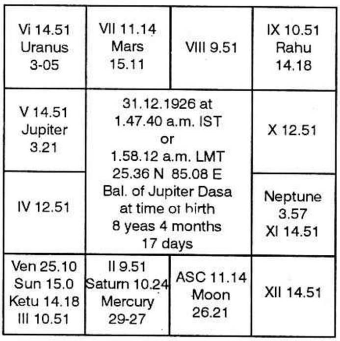

It is quite a unique feature of KRISHNAMURTI PADHDHATI that the Nirayana cusps are considered in quite a different way from the old traditional system. The way Mr. Krishnamurti attaches importance to the constellations and subs of different cusps and their proper application to any particular chart is really marvelous. He is quite right to say that the cusps denote exclusively the indications of Bhavas reflected for the native. This is scientific and appealing to any intelligent mind. In case of twins or children born in near proximity of time, what is that which changes? All the planets and their degree positions remain almost the same. It is only the cusp and the cusp alone, which changes so rapidly with the lapse of the most minimum period of time. Hence cusps must be given their due importance in analysis of any chart.
At times, when the analysis of Bhavas does not point out a particular planet as a significator or wherever there is some confusion in regard to selection of significators for a particular point in consideration, the cusps alone come to our rescue and solve our problem.
Now the principle to be commonly applied is very simple.
Mark where a particular cusp lies, what is its constellation and what is its sub. Further mark whether any planet is posited in the constellation of the, constellation lord of the cusp. If so, take the planet as a significator. If no planet is posited in its constellation, consider that very planet alone.
Similarly mark who is the sub lord of a particular cusp. Further notice whether any planet is posited in its constellation. If so, that planet will be a very strong significator, because according to K.P; it is the sub and sub alone which decides a particular matter.
In this article, it has been my sincere endeavour to highlight this consideration.

This chart is to be studied from the point of view of foreign travel or overseas.
Let us first of all know the principle according to K.P. for this consideration.
"One will have the opportunity to go overseas only when the 12th Cusp sublord is a significator of house 3 or 9 or 12 and the event would take place during the conjoined periods of the significators of houses 3,9 &12."
In the above chart, the 12th cusp sub lord is Jupiter and he is a significator of 3rd house (by ownership of the house). Hence this native has got the opportunity to go overseas. Let us find out the time of event.
Consider houses 3,9 and 12.
3rd house is occupied by Ketu, Sun & Venus. No planet is in the constellations of Ketu & Sun. Ketu, Sun, Venus and Mars are in the constellations ruled by Venus. Jupiter is owner of 3 and no planet is in its star.
So Ketu, Sun, Venus & Mars and Jupiter are the significators of 3
9th House is occupied by Rahu. Rahu alone is tenanted in its own star. Owner of 9th house is Mercury. Only Mercury is in its own star. So Rahu & Mercury are the significators of 9th house.
12th house is occupied by none-Mercury is the owner, in its own star.
Hence the significators of houses 3, 9 &12 according to the above analysis are Ketu, Sun, Venus, Mars, Jupiter, Rahu & Mercury. The nodes are stronger than the planets. Here Ketu is conjoined with Sun & Venus and also in the houses of Jupiter. So kethu is stronger and can be substituted for Venus, Sun & Jupiter. So also Rahu for Mercury. Hence the strong significators are Ketthu, Rahu and Mars.
Actually, the native left for UK on 3.10.1951 during Saturn dasa, Rahu bhukti, Mars antara and Saturn shookshma. The day is ruled by Mercury, Moon's sign is Libra, ruled by Venus, Moon's star is Swathi, ruled by Rahu.
It may be slightly surprising to note that Saturn has come as Dasa lord as well as shookshma lord, at the time of fructification of the event because he is not finding a place as one of the strong significators during our analysis of houses 3, 9 & 12. Though he qualifies himself as one of the significators, by virtue of being aspected by Mars and also conjoined with Mercury but it is only feeble.
Please note that Saturn is the sublord of 3rd and 9th cusp and no planet is tenanted in his star except himself. So as I mentioned in the beginning of this article, Saturn has emerged as a strong significator in the above case, by owning the sub of relevant cusps and not from analysis of bhavas. Thus the importance of cuspal sublord is portrayed through this example.